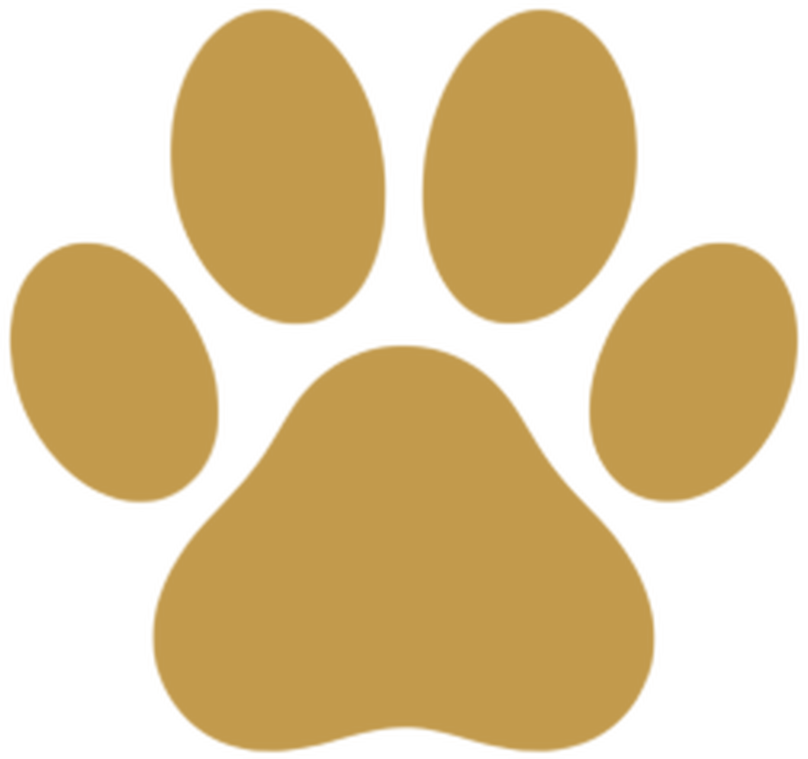
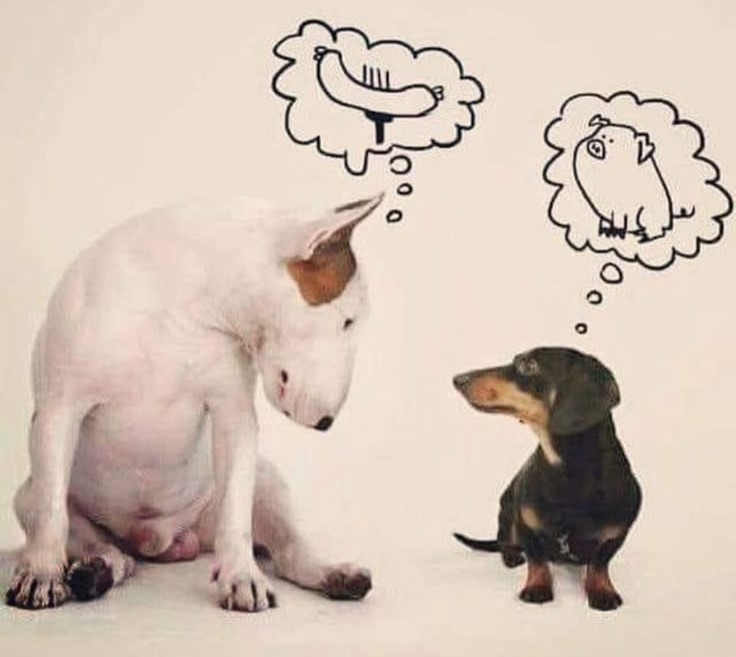
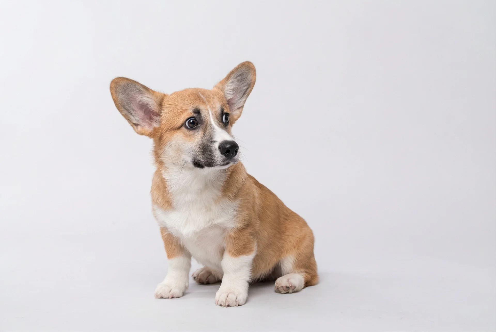
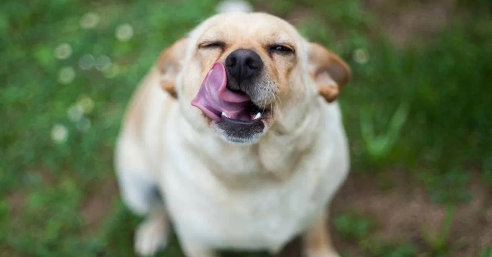
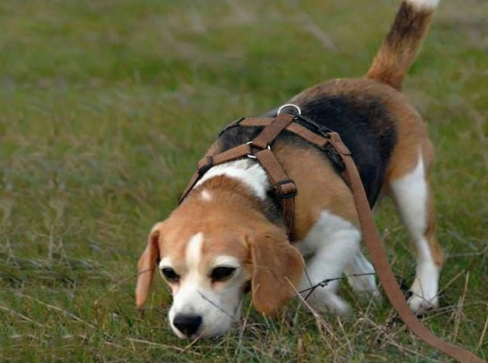
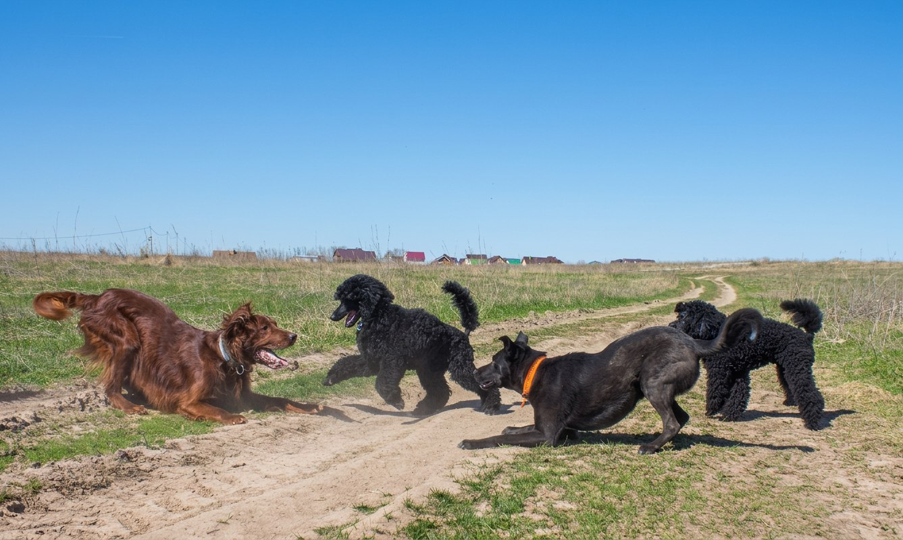
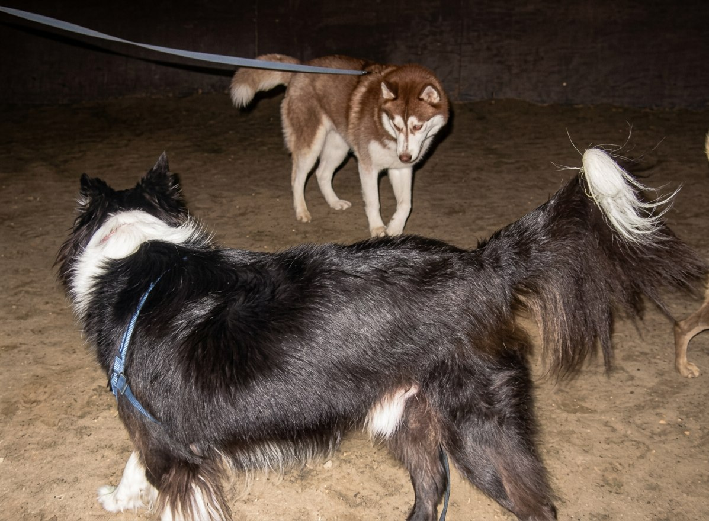
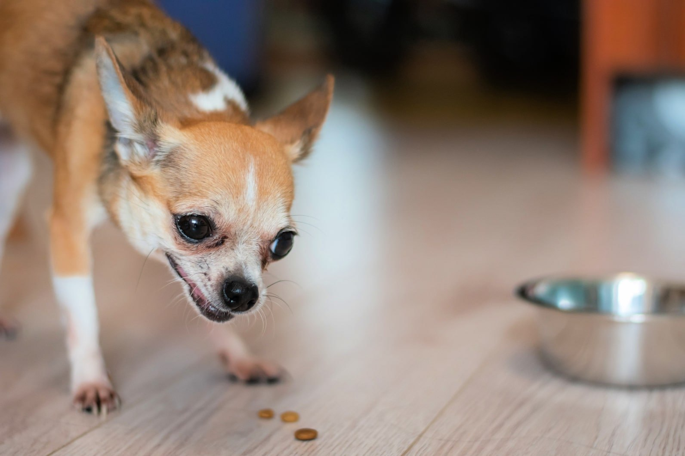

Собаки - социальные животные. Общение с сородичами и людьми - это не просто желание, а их базовая потребность.

Что такое здоровая коммуникация?
ЯЗЫК ТЕЛА
Тонкие сигналы языка тела, с помощью которых ваша собака сообщает о своих мирных намерениях или же, наоборот, о внутреннем напряжении. Очень важно давать ей возможность применять эти сигналы по отношению к людям и собакам, не игнорировать ее попытки к "вежливому общению", а, наоборот, помочь разрешать ситуации которые могут быть потенциально конфликтными на уровне вежливого взаимодействия.





Сигналы дистанции собака применяет уже тогда, когда сигналы примирения были проигнорированы или не считаны вовремя. Сигналы дистанции (или угрозы) мы не интерпретируем как агрессивное поведение. Если собака не кусает, она не хочет этого делать, ее цель - продемонстрировать угрожающее поведение, чтобы попросить отойти, оставить кого-то на дистанции или попросить прекратить что-то делать.

Мария поможет разобраться в поведении собаки и подобрать спокойные шаги для вашей ситуации.